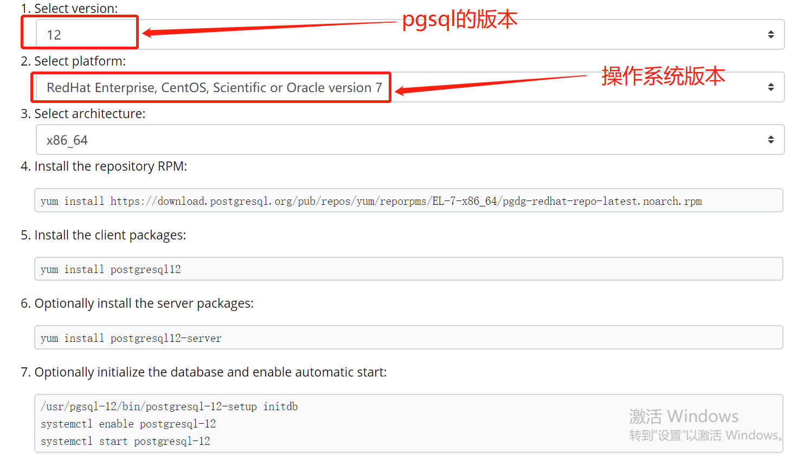
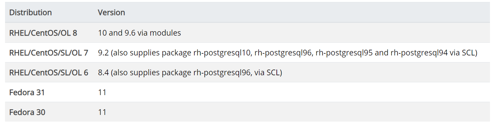

单节点psql的安装
1.1 初识 PostgreSQL
PostgreSQL是由PostgreSQL社区全球志愿者开发团队开发的开源对象-关系型数据
库。它源于UC Berkeley大学1977年的Ingres计划，这个项目是由著名的数据库科学家
Michael Stonebraker （2015年图灵奖获得者）领导的。在1994年，两个UC Berkeley大学
的研究生Andrew Yu和Jolly Chen增加了一个SQL语言解释器来替代早先的基于Ingres
的QUEL系统，建立了 Postgres95o为了反映数据库的新SQL査询语言特性，Postgres95
在1996年重命名为PostgreSQL,并第一次发行了以PostgreSQL命名的6.0版本，在
2005年，PostgreSQL发行了以原生方式运行在Windows系统下的8.0版本。随着2010年
PostgreSQL 9.0的发行，PostgreSQL进入了黄金发展阶段，目前，PostgreSQL最新的稳定
版是 PostgreSQL 12
PostgreSQL是目前可免费获得的最高级的开源数据库。它非常稳定可靠，有很多前沿
的技术特性，并且性能卓越，在数据完整性和正确性方面赢得了良好的声誉。目前主流的
云服务提供商如亚马逊云、微软云、腾讯云、阿里云、百度云都提供了 PostgreSQL的RDS
服务。
PostgreSQL号称是全世界最先进的开源关系型数据库，在支持的功能特性比Mysql要多，功能强大，且有不少先进的概念。但在互联网上，Mysql的使用的广泛度远超于PostgreSQL。
1. 安装
Postgresql的部署方式有两种：一是源码编译安装；二是yum安装；此处的部署方式为yum
在官网点击Downloads进入下载页面，选择相应的安装系统，本文的部署系统是Centos，进入地址https://www.postgresql.org/download/linux/redhat/，选择相应的Postgresql的安装版本以及系统版本，如下图：

选择好版本后，从第4步开始，执行完全部命令即可：
1 | yum install https://download.postgresql.org/pub/repos/yum/reporpms/EL-7-x86_64/pgdg-redhat-repo-latest.noarch.rpm |
包含在各个发行版本系统的pgsql
在RHEL 6 和 7中，包含了postgresql-server，可以执行 yum install postgresql-server命令安装，下面是各个发行版本所对应的pgsql的版本：

在安装完成后，也需要进行初始化操作：
- 对于
RHEL / CentOS / SL / OL 6：
1 | service postgresql initdb |
- 对于
RHEL / CentOS / SL / OL 7, 8 Or Fedora 29以及更新的版本：
1 | postgresql-setup initdb |
部署路径介绍
数据目录在 /var/lib/pgsql/12/
yum方式安装完后，会自动创建名为postgres的用户和用户组以及postgres数据库。
安装目录在：/usr/pgsql-10/bin
为了能够直接使用pg_ctl等命令，vim ~/.bash_profile增加下面的内容
1 | PGPATH=/usr/pgsql-10/bin |
使更改生效
source ~/.bash_profile
- Post Title: 单节点psql的安装
- Post Author: 郭靖大虾
- Post Link: http://yoursite.com/2020/07/15/单节点psql的安装/
- Copyright Notice: All articles in this blog are licensed under CC BY-NC-SA 4.0 unless stating additionally.